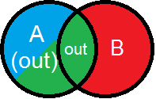
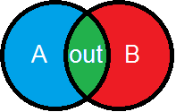
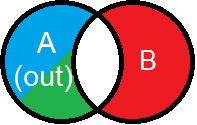
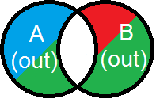

This is the help file for DeltaGene.
Contents
Introduction
General usage
Operators and output
HPO Browser
Source
Default (A)
The
output for list(s)
B only contain those genes
that also occur in list
A. This is the programs' default behaviour.

AND
Similar to the default behaviour, the The
output will be a single column that only contains genes that occur in both
A and
B

NOT
This functions'
output is a single column with genes that are exclusive to
A.

XOR
This functions'
output is multiple columns with genes that are in
A or
B but not in both

Output
The standard output is a table with
A in the leftmost column, and list(s)
B in the columns thereafter.
It is possible to copy and paste cells into spreadsheet programs.